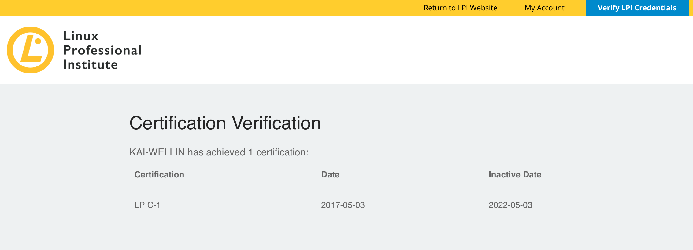

About
Kai
Lin
Software Engineer · Cyber Security · System Engineer
Experience
Advanced IT Security Specialist
December 2018 – December 2019
- Performed project management, consulting services, deployment and maintenance of CyberArk Privileged Access Security (PAS) deployment for financial institutions and top banks in Taiwan.
- Utilized Excel pivot tables to investigate monthly privileged account related incidents and data to provide analytic reports.
- Provided system migration from the old version of Windows servers and MSSQL to the new version of Windows servers and MSSQL of Symantec Control Compliance Suite (CCS) for Nan Shan Life Insurance Company.
- Given policy configuration consulting services of Symantec Data Center Security (DCS)
- Provided In-depth lectures and customized PowerPoint learning documents for CyberArk PAS and DCS.
- Written customized technical documents of security solutions for enterprises.
Sales Specialist
April 2018 – November 2018
- Negotiated prices of cybersecurity solutions with both the suppliers and the customers.
- Provided quotation for the cybersecurity solutions, including software products and value-added services within the fast-past environment.
- Dealt with customer complaints and helped with communication issues between the engineers and customers to facilitate project delivery.
- Orchestrated the research development team, integration engineer team and sales team to implement and maintain the security solutions deployment in financial enterprises.
System Engineer
May 2017 – March 2018
- Provided deployment, configuration, migration and maintenance of CA Privileged Access Management for Ministry of Economic Affairs, ROC.
- Written C program to interact with CA PAM through RESTful API and JSON for ATM.
- Opened cases and dealt with QRadar underlying Linux Red Hat operating system.
- Hosted a seminar to demonstrate the functionalities of IBM QRadar SIEM to Pingtung County Government.
- Utilized Java regular expression to do false-positive configuration and to generate security incidents by correlating logs from unrecognized network devices.
- Worked closely with programmers and clients to develop customized dashboards and incident triggering alerts of IBM QRadar SIEM.
- Presented malicious incident reports of Symantec Advanced Threat Protection (ATP) to security department managers and staffs of Cathay Financial Holdings Co., Ltd. at the monthly security meetings.
- Troubleshot Symantec ATP through the underlying Linux operating system.
Skills
- Programming Skills: C, C#, Java, PHP, SQL, HTML, CSS, Bash Script
- Operating System Familiarity: Linux/Unix (Acquired LPIC 1 certification 2017), Windows Server
- Enterprise Security Solutions and Products: CyberArk PAS, CA PAM, Symantec DCS, Symantec ATP, Symantec SEP, Symantec CCS, IBM QRadar SIEM
Certification

Check For Validation
Credential ID:
LPI000351749
Verification Code:
942v6wn68j
Education
Computer Programmer, Co-op Diploma Program
2020 - Present
Georgian College, Barrie, Ontario, Canada
Bachelor of Business Administration
Applied Foreign Languages
2011 - 2016
Shih Chien University, Taipei, Taiwan